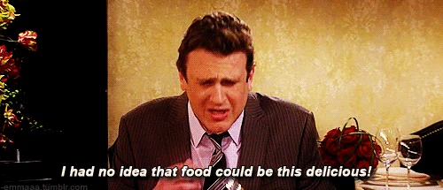

co<!DOCTYPE html>
<html>
	<head>
		<style type="text/css">
			h1 {color:blue;}
			p  {color:red;}
			[href]{
				border: 1px solid black;

			}
			a:visited{
				color: green
			}

		</style>
		<title>5 Favorite Resturants</title>
	</head>
	<body>
		<h1><u>These are the most delicious Resturants in Raleigh/Durham</u></h1>
		<p><b>The list is in no particular order, but they are all delicious!</b></p>
		<ul>
			<li><a href="http://msushidurham.com/" target="_blank">M Sushi</a></li>
			<li><a href="mykitchen.html" target="_blank">My Kitchen</a>(if you would like food from my Kitchen please click<a href="contactpage.html"> here)</a></li>
			<li><a href="http://www.stanburyraleigh.com/">Stanbury</a></li>
			<li><a href="http://www.fivestarraleigh.com/">Five Star Chinese</a></li>
			<li><a href="http://raleightimesbar.com/">The Raleigh Times</a></li>
		</ul>
		<h2></h2>


	</body>


</html>